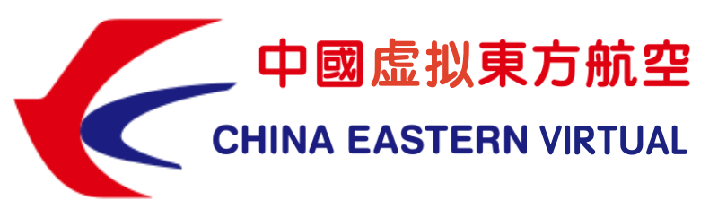

China Eastern Virtual was founded on 2019.12.15 and is the third IFVARB certified virtual airlines in mainland China. We are a non-profit organization dedicated to making flying enthusiasts have a better experience. The base airport of China Eastern Virtual is Shanghai Pudong International Airport / PVG / ZSPD. We have hundreds of routes from Shanghai and major cities across the country to the world. We love flying, insist on innovation, and update in real time so that the authenticity of the flying experience reaches a whole new level. At the same time, China Eastern Virtual has a close relationship with Map-Flight (Infinite Flight Real-time Flight Radar System for Chinese players) and IFCN (the largest Infinite Flight organization in China), and has also built an excellent platform for Infinite Flight players to communicate.
虚拟中国东方航空成立于2019.12.15日，是中国大陆第三家IFVARB认证的虚航。我们是一个致力于让飞行爱好者拥有更好体验的非盈利性组织。虚拟中国东方航空的基地是上海浦东国际机场/PVG/ZSPD，我们拥有从上海及全国各大城市飞往全世界的数百条航线。我们热爱飞行，坚持创新，实时更新，让飞行体验的真实性达到一个全新的高度。与此同时，虚拟中国东方航空与Map-Flight（服务于中国玩家的Infinite Flight实时飞行雷达系统）以及IFCN（中国最大的Infinite Flight组织）有着密切的合作关系，也为 Infinite Flight 的玩家搭建了一个良好的交流平台。